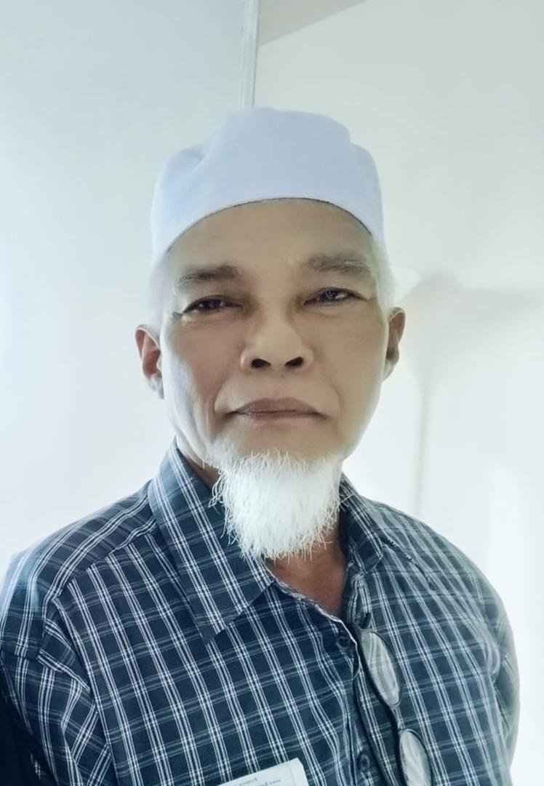

The People Who Made Me, Me<3
Hey there! You’ve stumbled into the Family section, welcome to the heart of my world. This is where I introduce the amazing people who’ve shaped me, supported me, and, let’s be honest, provided plenty of material for embarrassing stories.
To me, family is more than just shared DNA, it’s laughter-filled moments, impromptu debates about the “right†way to do things, and a constant source of love and chaos. Whether it’s festive get-togethers, debating the best way to cook maggi (yes, that’s a thing), or sharing goofy inside jokes, they’re the reason my life is so colorful.
👨‍👩‍👧‍👦My Lifelong VIPs‍🐱
| My Baba | My Mama | My Younger Brother | My Cat |
|  |  |
||
| Ahmad Suhaimi Bin Mohd Yusoff | Kamlah Abdullah | Ahmad Mirza Bin Ahmad Suhaimi | Coco |
| 📅 17 December 1959 | 📅 15 December 1968 | 📅 17 February 2006 | 📅 11 December 2022 |